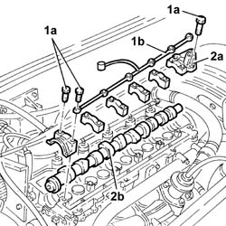

1036B10 overhead camshaft - r r on vehicle
- Path
- Procedures > 10 ENGINE > 1036 TIMING SYSTEM > 1036B overhead camshaft > 1036B10 overhead camshaft - r r on vehicle
- Kind
- repair procedure (removal / refitting; the operation number is the code)
- Applies to
- engines: 1.9 JTD 8v , 2.4 JTD 10v; all production periods
- Interactive page
- https://sloeber94.github.io/elrnDB-a156/en/#/3237772
Applies to: engines: 1.9 JTD 8v , 2.4 JTD 10v; all production periods
 Removing
Removing
 Refitting
Refitting1016A20 single cam cover - r + r and replace gasket
4450B10 Front WHEEL (one) - R.R.
7055B64 Engine compartment DUST shield in front wheel arch (one), left or right - R.R.
1092G10 single engine belt r r
1092A12 crankshaft pulley - r+r for versions with air conditioner
1032D12 timing system protective cover(s) - r + r
1008C10 power unit upper reaction link r r .
1016A10 sound-proofing cover - r + r .
1008C14 engine link bracket - r r
1032B61 timing belt pulley - r r
1. Undo the bolts (1a) and remove the camshaft journal lubrication pipe (1b).
2. Remove the camshaft caps (2a) and camshaft (2b) complete with oil seal.

Applies to: engines: 1.9 JTD 8v , 2.4 JTD 10v; all production periods
Refitting
RemovingFit the camshaft complete with oil seal.
Fit the camshaft caps and camshaft journal lubrication pipe and tighten the bolts to the specified torque.
 | Fastening | Component | Ø | Value (daNm) |
|---|---|---|---|---|
- | Bolt | CAMSHAFT CAPS | M7 | 1.3 - 1.6 |
1032B61 timing belt pulley - r r
1008C14 engine link bracket - r r
1016A10 sound-proofing cover - r + r .
1008C10 power unit upper reaction link r r .
1032D12 timing system protective cover(s) - r + r
1092A12 crankshaft pulley - r+r for versions with air conditioner
1092G10 single engine belt r r
7055B64 Engine compartment DUST shield in front wheel arch (one), left or right - R.R.
Topics linked from this page (14)
- 1008C10 power unit upper reaction link r r
- 1008C14 engine link bracket - r r
- 1016A10 sound-proofing cover - r + r
- 1016A20 single cam cover - r + r and replace gasket
- 1032B14 toothed timing belt - r + r for timing adjustment or replacement versions with air conditioner
- 1032B61 timing belt pulley - r r
- 1032B62 a/c duct pulley - r r
- 1032D12 timing system protective cover(s) - r + r
- 1092A12 crankshaft pulley - r+r for versions with air conditioner
- 1092G10 single engine belt r r
- 3330D30 vacuum pump - r+r
- 4450B10 Front WHEEL (one) - R.R.
- 5530B10 battery - r+r
- 7055B64 Engine compartment DUST shield in front wheel arch (one), left or right - R.R.